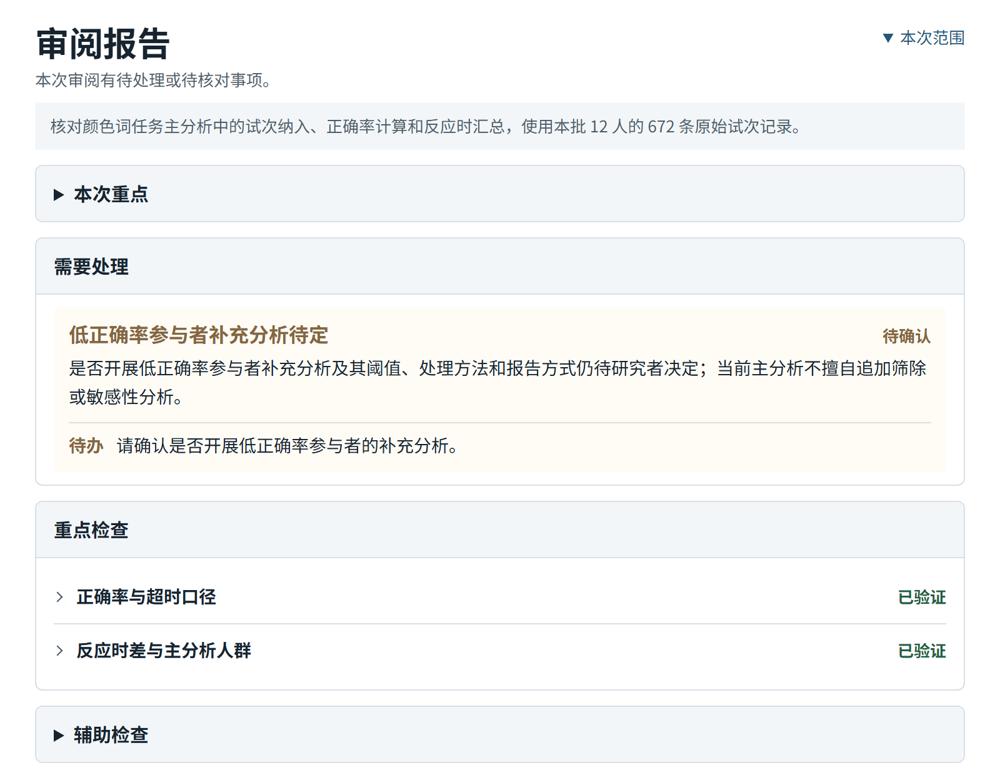

Research
Code Audit
让科研代码审阅有依据、可复验
Research Code Audit 是一个面向科研人员的 Codex 插件，用于核查实验和数据分析代码是否符合已确认的研究计划。它将影响研究结果的关键规则转化为可执行测试：先独立确定预期，再运行实际脚本比对结果。报告按优先级呈现问题，并保留验证依据和代码位置，帮助研究者判断先查什么、为什么。
看审阅演示研究计划
分析代码
审阅报告
为什么做这个插件
结果跑出来了，还是不知道先测哪里
我问过几位用 AI 写科研代码的同学，想知道他们拿到结果后会怎样检查。几个人都提到：代码跑通了，心里还是没底。有位做心理学实验的同学说，实验程序和分析脚本都会请 AI 帮忙写，但有时结果看着正常，真要自己检查，却不知道先测哪一段。
一条规则，要翻几处代码
就算知道要查哪条规则，代码一多，也容易查不过来。比如计划里就一句「按条件算正确率」，翻到代码里，得先看哪些试次留下来了，再看超时怎么处理，最后还要找到分母是怎么算的。请 AI 总结能少读一点代码，可看完还是会想，它具体查过哪里？
- 纳入哪些试次
formal = r["phase"] == "formal" - 哪些作答计为正确
r["outcome"] == "correct" - 分母怎么算
denominator = len(group)
从代码审阅到可验证的检查
让 AI 对照分析计划阅读代码，可以帮助定位疑点，但结论仍然主要依赖 AI 对代码的理解。研究者看完审阅意见，可能还会追问：它真的验证过这条规则吗？
例如，计划要求将超时试次计入正确率分母，代码却将其排除。两种写法都可能正常运行，结果也可能看起来合理。因此，我把独立验证加入流程：为已确认的规则设计能够区分不同写法的测试输入，先独立确定预期，再运行实际脚本。报告不仅给出判断，也能提供测试依据和对应的代码位置。
从研究规则到验证结果
确认检查标准
插件先读现有分析计划。遇到可能改变结果、但计划尚未写清的处理方式，会请研究者确认，避免 AI 自行补定研究口径。需要时也可以指定参考文献或既有实现。

执行独立验证
针对可验证的规则，插件设计能区分正确实现和常见错误的测试输入，独立确定预期结果，再运行实际脚本进行比对。无法自动核实的内容则标记为待验证。
查看证据与修复复验
报告说明本次检查范围，并优先列出待处理事项。展开条目，可以查看核对的研究规则、验证方式和对应的代码位置。
经研究者授权修复后，插件沿用原有输入和预期复验，并将结果记录在报告中。


展开检查依据示例

设计过程中的关键取舍
先确认规则，再执行检查
如果计划没写清超时试次等处理口径，AI 不应替研究者作决定。先确认检查标准，才有明确的审阅依据。
用实际运行核对，而不只生成审阅意见
阅读代码可以发现疑点，但不能替代验证。将独立预期与实际输出对照，让检查结论能够被复查。
按研究影响排序，而非固定优先级
不同研究关注的核心指标不同。检查项的优先级需要结合当前研究问题和分析计划判断。
一次试用反馈如何改变报告设计
问题：第一次请同学试用时，对方觉得报告比直接读代码清楚，但检查项一多，仍然要自己判断先看哪里。旧版把影响主要结果的规则和例行核对都放在「其他实现」，两类内容显得一样重要。
分析：问题不只是信息多，而是报告没有体现检查项对研究结果的不同影响。同一条规则在不同研究里，重要程度也可能不同。
调整：我让 AI 结合当前研究问题和分析计划判断检查项的重要性，并重新组织报告：先列「需要处理」，再展示影响关键结果的「重点检查」，辅助检查保留供按需展开。
这次改版希望让研究者不仅看见“检查到了什么”，也更容易决定“先处理什么”。